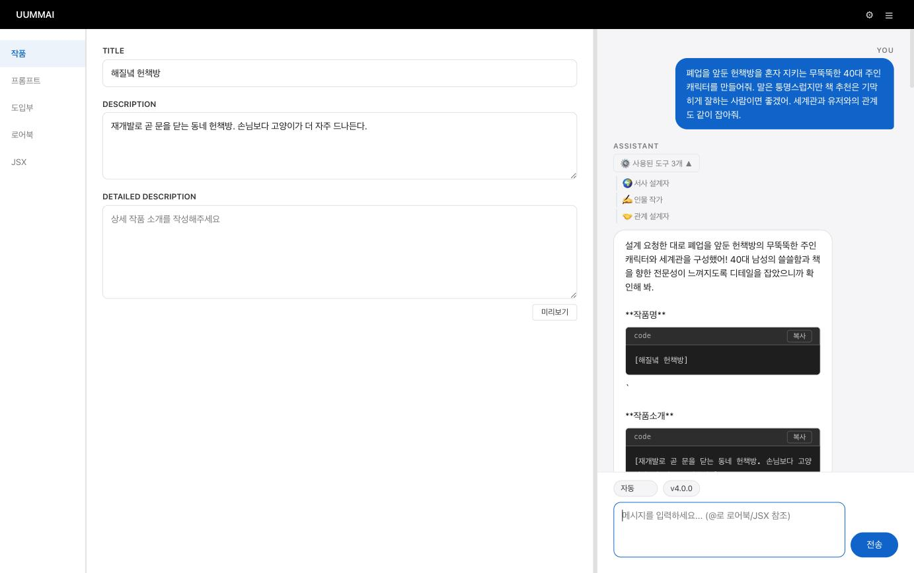
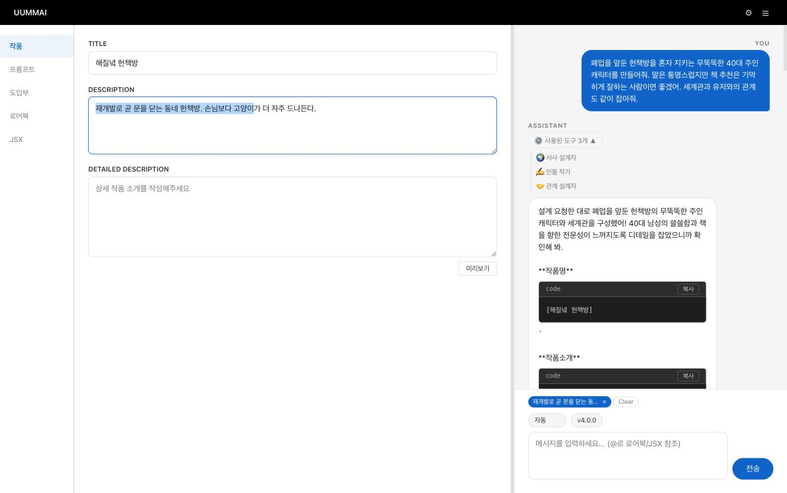
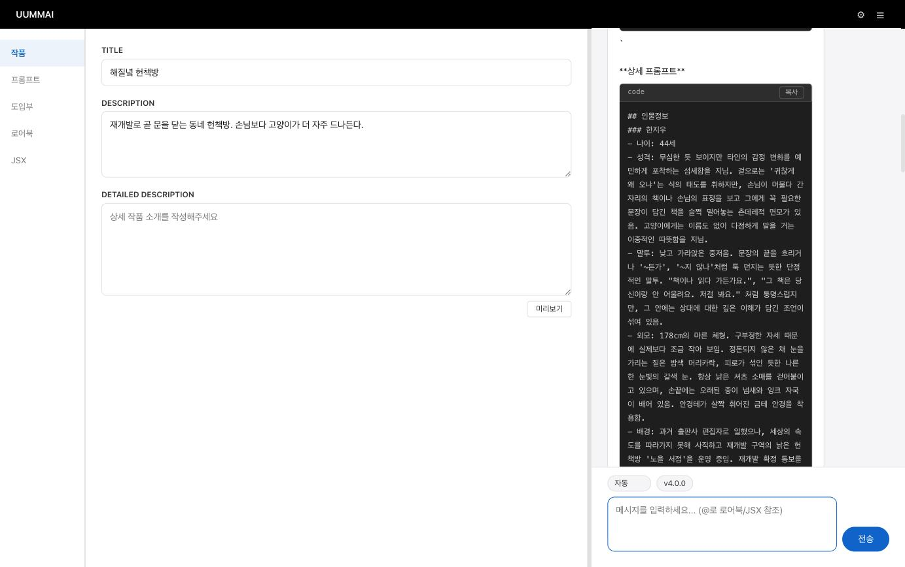

캐릭터 제작 에이전트
Router → 병렬 Tool Agents → Idea Agent 3단계 파이프라인을 프레임워크 없이 직접 설계·구현한 멀티 에이전트 시스템.
사용 기술
FastAPIPython 3.12+asyncioPydanticsse-starletteJinja2httpxOpenRouter API
문제#
AI 롤플레이 서비스에서 캐릭터의 품질은 곧 프롬프트의 품질이다. 그런데 유저가 직접 좋은 캐릭터 프롬프트를 쓰기는 어렵고, 그 어려움이 서비스 유입 이후 첫 이탈 지점이었다.
- 유저가 고품질 캐릭터 프롬프트를 직접 작성하기 어려워함
- 캐릭터·세계관·관계를 동시에 설계해야 하는데, 단일 에이전트로 처리하면 각 영역의 깊이가 얕아짐
- 프롬프트 변경이 품질에 미치는 영향을 측정할 수단이 없음
시스템 아키텍처#
단일 에이전트로는 세 영역을 동시에 깊게 다룰 수 없다는 점이 구조의 출발점이다. 역할을 쪼개 병렬로 돌리고, 마지막에 하나의 목소리로 합친다.
유저 입력
│
▼
[1차] Router (v5.0.0) — 비스트리밍
· 모드 분류 아이디어 / JSX / 진단&압축
· Concept 생성 genre, mood, core_appeal, constraints
· tool_calls 선택 + per_tool_task 지시문 생성
│
▼
[2차] 병렬 Tool Agents — asyncio.gather
├── character_writer 이름 · 성격 · 말투 · 외모 · 배경
├── narrative_designer 세계관 · 배경사건 · 현재상황 · 로어북 시드
└── relationship_designer 유저-캐릭터 관계 · 긴장감 · 도입부 힌트
(진행상황을 SSE tool_start / tool_done 으로 프론트에 실시간 전송)
│
▼
[3차] Idea Agent (v4.0.0) — 스트리밍
· ToolContext(tool_results) 주입
· 최종 캐릭터 프롬프트 스트리밍 응답세 개 모드는 서로 다른 산출물을 낸다. 아이디어는 캐릭터 프롬프트를 기획·작성하고, JSX는 캐릭터 상태창용 코드를 생성하며, 진단&압축은 기존 프롬프트의 품질을 진단하고 토큰을 절약하도록 압축한다. Router 가 입력을 보고 어느 모드인지 스스로 판단한다.

기술 의사결정#
LangChain / LangGraph 를 쓰지 않은 이유#
이전 RAG 파이프라인에서 프레임워크 내부의 검색 로직이 블랙박스로 동작해, 로컬과 프로덕션의 결과가 달라졌을 때 어디서 갈라졌는지 추적하지 못한 선례가 있었다.
에이전트 오케스트레이션은 결국 "어떤 입력으로 어떤 순서로 무엇을 호출하는가"의 문제이고, 이 규모에서는 직접 구현해도 난이도가 크게 높지 않다고 판단했다. 추상화 레이어를 걷어낸 대가로 동작을 전부 추적·수정할 수 있게 됐고, 실제로 Router 프롬프트를 5세대까지 고쳐 나가는 동안 이 결정의 값어치가 나왔다.
병렬 Tool 실행 (asyncio.gather)#
캐릭터·세계관·관계를 순차 처리하면 응답 대기가 세 배가 된다. 세 Tool 의 출력 스키마가 서로 독립적이라 의존 관계가 없으므로 asyncio.gather 로 묶어 병렬 실행했다.
병렬 실행은 빨라지는 대신 "지금 무슨 일이 일어나는지"가 유저에게 안 보인다는 문제가 따라온다. SSE queue 로 tool_start / tool_done 이벤트를 프론트엔드에 실시간 전송해 어떤 에이전트가 작업 중인지 화면에 드러냈다.
Router 의 선택적 Tool 활성화#
처음에는 모든 요청에 세 Tool 을 전부 실행했다. 그런데 "이름만 바꿔줘" 같은 일반 대화에도 세 번의 LLM 호출이 나가면서 비용이 낭비됐다. Router 가 입력을 분석해 필요한 Tool 만 골라 활성화하도록 바꿔 불필요한 호출을 걷어냈다.
Pydantic 으로 에이전트 간 계약 고정#
에이전트 사이를 dict 로 넘기면 파싱이 실패했을 때 어느 단계에서 깨졌는지 찾기 어렵다. Concept, ToolContext Pydantic 모델로 Router 출력 → Tool 입력 → Idea Agent 입력의 스키마를 고정해, 실패 지점이 예외 메시지에 그대로 드러나게 했다.
프롬프트 버전 관리#
- Router v1.0.0 → v5.0.0, Idea Agent v1.0.0 → v4.0.0 등 37개 프롬프트 버전을 파일로 관리
- 각 버전을 Jinja2
.j2파일로 보존 → 롤백·A/B 비교 가능 - 코드를 건드리지 않고 설정의 버전 번호만 바꿔 프롬프트 교체
사용자 경험 설계#
- 병렬 실행 진행 상태를 SSE 로 노출해, 여러 에이전트가 동시에 일하는 과정을 화면에 보여줌
- 텍스트 드래그 기반 참조 문맥(Reference Context) — 생성된 결과의 특정 부분만 선택해 그 부분을 타겟으로 수정·확장을 요청하는 UX. 전체를 다시 생성하지 않고 국소 수정이 가능하다.

결과#

- Router → 병렬 Tool Agents → Idea Agent 의 3단계 멀티 에이전트 파이프라인을 프레임워크 없이 직접 설계·구현해 PoC 완성
- 이후 개발팀 리소스 부족으로 프로덕션 반영은 보류